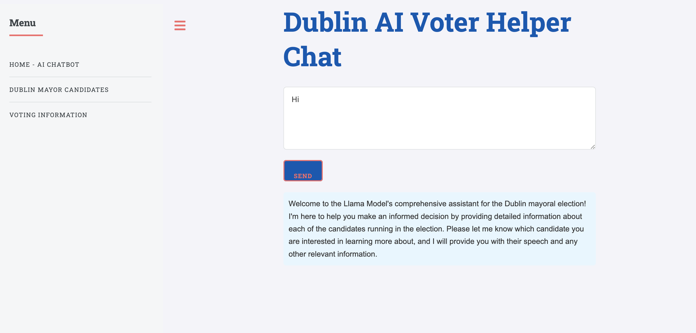
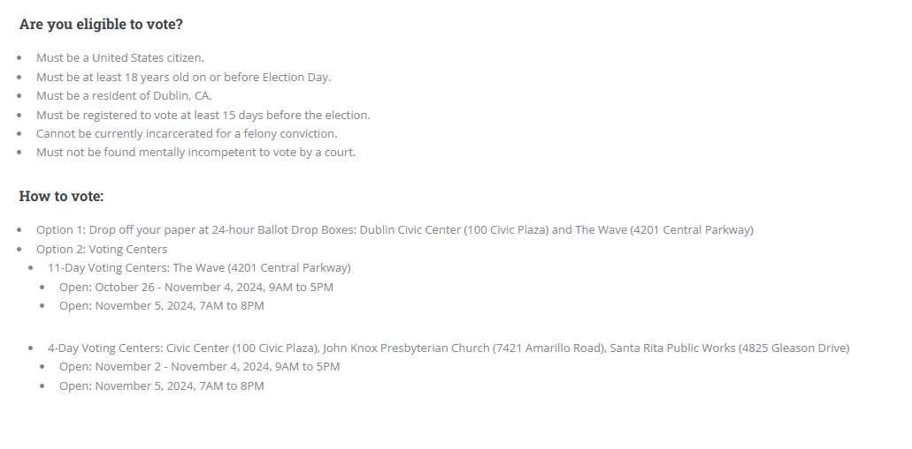

// project_02
Dublin Mayoral Election
AI Vote Helper
Independent Project: EHS AI Club & Civic Technology | 2024
About the Project
The Dublin Mayoral Election AI Vote Helper is a civic technology tool designed to help Dublin residents make informed voting decisions by comparing mayoral candidates through AI-powered analysis. Users can ask questions in natural language and receive clear, unbiased summaries and side-by-side comparisons of candidate positions on key local issues.
Built using Ollama with custom prompt engineering, the tool processes campaign manifestos, policy statements, and public records to generate fair and accurate candidate profiles. The project involved collecting and structuring political data from publicly available sources, designing a clean and accessible user interface, and applying state-of-the-art AI to a real-world civic problem. The site was hosted on Vercel, making it accessible to Dublin voters during the 2024 election.
Skills & Tools
Key Features
What I Learned
This project gave me real hands-on experience applying large language models to a genuine civic problem in my own community, something that felt far more meaningful than a textbook exercise. I learned that prompt engineering is both an art and a science: small changes in how you frame a question to an LLM can dramatically affect the accuracy, fairness, and tone of its response, especially when dealing with politically sensitive topics.
I also developed skills in collecting and structuring unstructured political data from public sources (press releases, interviews, campaign websites) and transforming it into a format the model could reason about reliably. Most importantly, this project reinforced my belief that AI can be a powerful tool for improving civic engagement and accessibility, helping voters who lack the time to research every candidate still make informed decisions that reflect their values.

